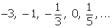
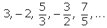
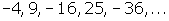
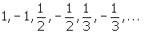
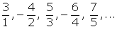
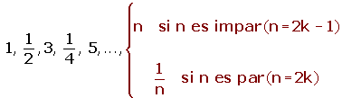
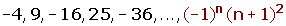
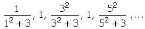
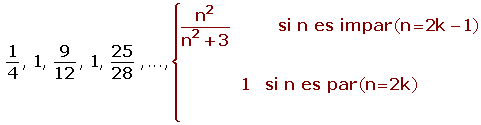
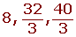

Ejercicios de sucesiones y progresiones
1Hallar el término general de las siguientes sucesiones:
1
2
3
4
5
6
7
8
2Estudia la monotonia, la convergencia o divergencia y las cotas (si existen) de las siguientes sucesiones:
1
2
3
3El primer término de una progresión aritmética es -1, y el décimoquinto es 27. Hallar la diferencia y la suma de los quince primeros términos
4El cuarto término de una progresión aritmética es 10, y el sexto es 16. Escribir la progesión
5Escribir tres medios artméticos entre 3 y 23
6Hallar la suma de los quince primeros múltiplos de 5
7Hallar la suma de los quince primeros números acabados en 5
8Hallar la suma de los quince primeros números pares mayores que 5
9El 1er término de una progresión geométrica es 3, y el 8º es 384. Hallar la razón, y la suma y el producto de los 8 primeros términos
10El 2º término de una progresión geométrica es 6, y el 5º es 48. Escribir la progesión
11Interpolar tres medios geométricos entre 3 y 48
12Encontrar la fracción generatriz de 3.2777777...
13Hallar los ángulos de un cuadrilátero convexo, sabiendo que están en progresión aritmética, siendo d = 25º
14El cateto menor de un triángulo rectángulo mide 8 cm. Calcula los otros dos, sabiendo que los lados del triángulo forman una progresión aritmética
- 1
- 2
- 3
- 4
- 5
- 6
- 7
- 8
- 9
- 10
- 11
- 12
- 13
- 14
Ejercicio 1 resuelto
Hallar el término general de las siguientes sucesiones:
Soluciones:1
El numerador es constante.
El denominador es una progresión aritmética de d= 1.

2
El numerador es una progresión aritmética con una d= 1.
El denominador es una progresión aritmética con una d = 1.

3
En esta sucesión se han simplificado algunas fracciones.

El numerador es una progresión aritmética con una d= 1.
El denominador es una progresión aritmética de d= 1.

4
Si prescindimos del signo es una progresión aritmética con una d= 1.
Por ser los términos impares los negativos multiplicamos por (-1)n.

5

Si prescindimos del signo, el numerador es una progresión aritmética con una d= 1.
El denominador es una progresión aritmética de d= 1.
Por ser los términos pares los negativos multiplicamos por (-1)n+1.

6
Es una sucesión oscilante.
Los términos impares forman progresión aritmética con una d= 1, si no tenemos en cuenta los términos pares.
El denominador de los términos pares forman progresión aritmética con una d= 1.

7

Si prescindimos del signo y del exponente tenemos una progresión aritmética con una d= 1.
Por estar los términos al cuadrado, tenemos que elevar el término general al cuadrado.
Por ser los términos impares los negativos multiplicamos por (-1)n.

8

Es una sucesión oscilante.
El numerador de los términos impares forman progresión aritmética con una d= 1, si no tenemos en cuenta los términos pares.
Por estar los términos al cuadrado, tenemos que elevar el término general al cuadrado.
El primer sumando del denominador (prescindiendo del cuadrado) es una progresión aritmética de d= 1 (sin contar los términos pares).
El término general lo tenemos que elevar al cuadrado y sumarle 3.
Los términos pares forman una sucesión constante.

Ejercicio 2 resuelto
Estudia la monotonia, la convergencia o divergencia y las cotas (si existen) de las siguientes sucesiones:
Soluciones:1
3, 4/3, 1, 6/7,...
Es monotona estrictamente decreciente.
a1= 3
a3= 1
a1000= 0.5012506253127
a1000 000 = 0.5000012500006
El límite es 0.5
Sucesión convergente
Por ser decreciente, 3 es una cota superior, el máximo.
0.5 es una cota inferior, el ínfimo o extremo inferior.
Por tanto la sucesión está acotada.
0.5 < a n ≤ 3
2
2, − 4, 8, − 16, ...
No es monótona.
No es convergente ni divergente.
No está acotada.
3
No es monótona.
Es convergente porque el límite = 0.
Está acotada superiormente, 1 es el máximo.
Está acotada inferiormente, -1 es el mínimo.
Está acotada.
−1 ≤a n ≤ 1
Ejercicio 3 resuelto
El primer término de una progresión aritmética es -1, y el décimoquinto es 27. Hallar la diferencia y la suma de los quince primeros términos.
a 1 = − 1; a 15 = 27;
a n = a 1 + (n - 1) · d
27= -1 + (15-1) d; 28 = 14d; d = 2
S= (-1 + 27) 15/2 = 195
Ejercicio 4 resuelto
El cuarto término de una progresión aritmética es 10, y el sexto es 16. Escribir la progesión.
a 4 = 10; a 6 = 16
a n = a k + (n - k) · d
16 = 10 + (6 - 4) d; d= 3
a1= a4 - 3d;
a1 = 10 - 9 = 1
1, 4, 7, 10, 13, ...
Ejercicio 5 resuelto
Escribir tres medios artméticos entre 3 y 23.
a= 3, b= 23;

d= (23-3)/(3+1) = 5;
3, 8, 13, 18, 23.
Ejercicio 6 resuelto
Hallar la suma de los quince primeros múltiplos de 5.
a1= 5; d= 5; n = 15.
a n = a 1 + (n - 1) · d

a15 = 5 + 14 · 5 = 75
S15 = (5 + 75)· 15/2 = 600.
Ejercicio 7 resuelto
Hallar la suma de los quince primeros números acabados en 5.
a1= 5; d= 10 ; n= 15.
a15= 5+ 14 ·10= 145
S15 = (5 + 145)· 15/2 = 1125
Ejercicio 8 resuelto
Hallar la suma de los quince primeros números pares mayores que 5.
a1= 6; d= 2; n= 15.
a15 = 6 + 14 · 2 = 34
S15= (6 + 34) · 15/2 = 300
Ejercicio 9 resuelto
El 1er término de una progresión geométrica es 3, y el 8º es 384. Hallar la razón, la suma y el producto de los 8 primeros términos.
a 1 = 3; a 8 = 384;


384 = 3 · r8-1 ; r7 = 128; r7 = 27; r= 2.
S8 = (384 · 2 - 3 ) / (2 − 1) = 765

Ejercicio 10 resuelto
El 2º término de una progresión geométrica es 6, y el 5º es 48. Escribir la progesión.
a2= 6; a5= 48;
an = ak · r n-k
48 = 6 r5-2 ; r3 = 8; r = 2.
a1= a2 / r; a1= 6/2= 3
3, 6, 12, 24, 48, ...
Ejercicio 11 resuelto
Interpolar tres medios geométricos entre 3 y 48.
a = 3; b = 48;

3, 6, 12, 24, 48
Ejercicio 12 resuelto
Encontrar la fracción generatriz de 3.2777777...
3.2777777...= 3.2 + 0.07 + 0.007 + 0.0007 + ...
Tenemos una progresión geométrica decreciente ilimitada.
a1= 0.07 r= 0.1;
3.2 + 0.07 / (1 - 0.1) = 32/10 + 7/90 = 59/18
Ejercicio 13 resuelto
Hallar los ángulos de un cuadrilátero convexo, sabiendo que están en progresión aritmética, siendo d= 25º.
La suma de los ángulos interiores de un cuadrilátero es 360º.
360= ( a1 + a4) · 4/2
a4= a1 + 3 · 25
360= ( a1 + a1 + 3 · 25) · 4/2
a1 = 105/2 = 52º 30' a2 = 77º 30'
a3 = 102º 30' a4 = 127º 30'
Ejercicio 14 resuelto
El cateto menor de un triángulo rectángulo mide 8 cm. Calcula los otros dos, sabiendo que los lados del triángulo forman una progresión aritmética.
a2 = 8 + d; a3 = 8 + 2d
(8 + 2d)2 = (8 + d)2 + 64


 Ejercicios
Ejercicios